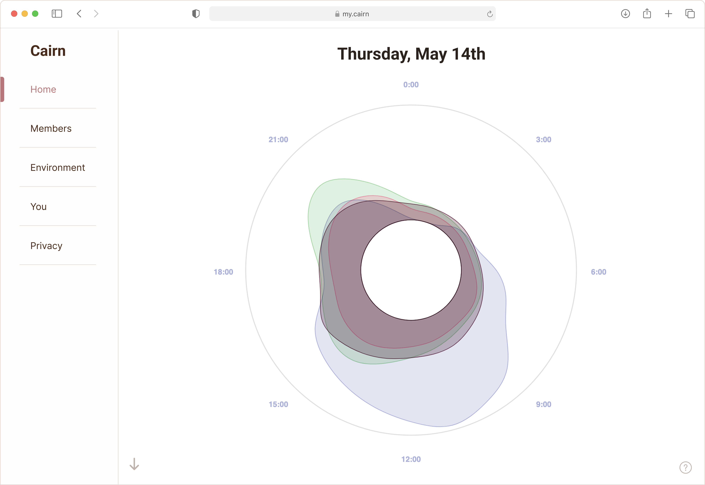
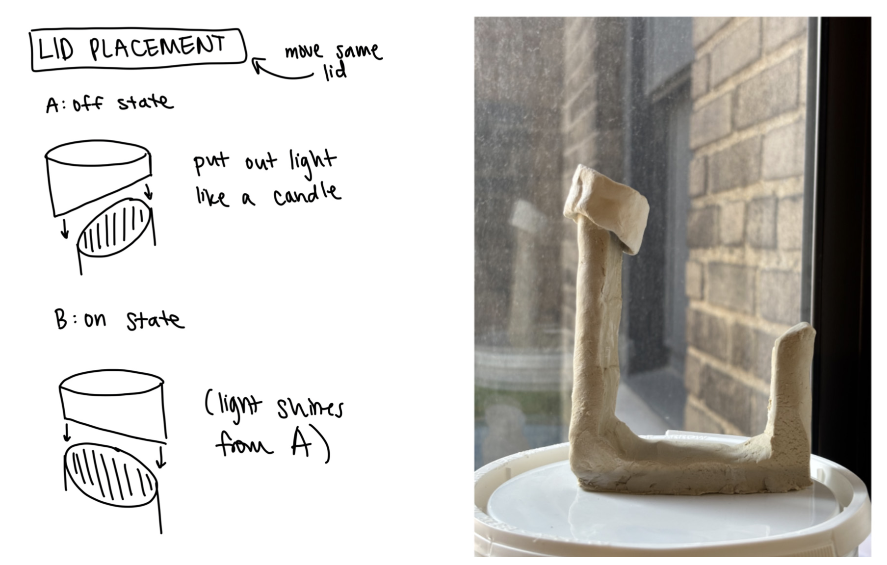
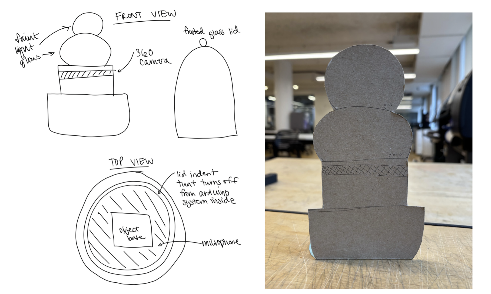
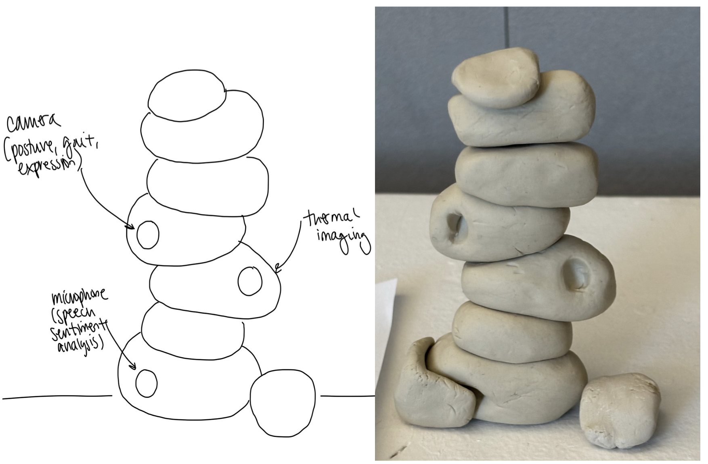
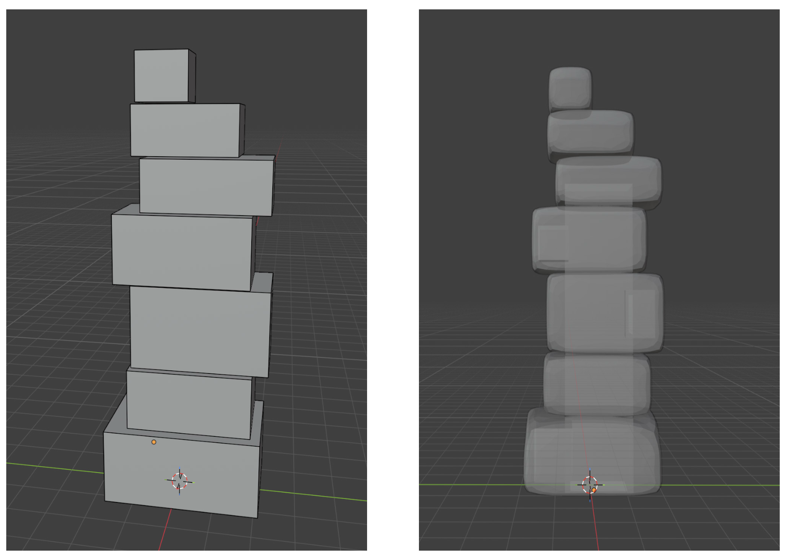

Cairn
Cairn is a speculative IoT smart home system that builds a digital portrait of a home's emotional climate. It proposes using machine learning to read deviations related to emotions from combining data from the wearables and this smart home device in a household and lets people choose whether to share their aggregate signal locally with the people they live with to promote better understanding and communication.
The leading question
The distinction between technology that replaces human connection and technology that creates the conditions for it.
That line is what drove this project, and it is one that HCI researchers are still actively exploring. Cairn lives squarely on the second side of it.
How might technology lower the barrier to understanding others in our domestic spaces?
The year after I finished my undergraduate degree, my close friends and I scattered into different fields with different days. We did our best to support one another, but our lives had diverged so quickly that reading someone's mood became guesswork, and that guesswork quietly bred conflict, rooted not in indifference but in a lack of understanding of what was shaping each other's days.
No technology should replace the work of actually talking to each other through that. But what if it could lower the barrier to entering it? Instead of fumbling in the dark trying to read someone, what if you had just enough awareness to know when to reach out, how to time a conversation, or simply that something was worth acknowledging?
One signal, many sources
Cairn links data a home already produces (Oura, WHOOP, Fitbit, Apple Watch, Nest, Echo) rather than installing a wall of new, costly, surveillance-feeling sensors.
Trained on you, for two weeks
ML compares each reading to a baseline learned from that specific home, not to a universal "healthy" score. A sports fan mid-game looks stressed, but that's joy in context.
An LLM that understands context
Current LLMs can reason about the relationship between a situation and the language used to express it (something command-based smart homes fail at) to infer what a deviation means.
Reading emotion against a household's own baseline, never against "good" or "bad."
To keep the project speculative but grounded, I ran a literature review with Dr. Jorge Ortiz, Director of the Sensing & Reasoning Lab at Rutgers. The technology Cairn needs doesn't fully exist yet, but it could soon, and the science already points the way.

Existing data visualization tools couldn't produce the specific radial form I needed, so I built it in collaboration with Gemini (whose long context window and coding capabilities made it the right fit for generating and iterating on a custom SVG structure) and Claude. Inspired by the layered flower representations in MIT Senseable City Lab's Beijing Inside Out and Stefanie Posavec's work, the form became a custom radial clock where each ring encodes a week of signal and each arc is a day. The household sees its aggregate first (all members read as one shared emotional climate), then each person's individual signature, each accompanied by a short plain-language inference written the way one might update a friend about someone else without exposing their personal details. The data visualization language is abstract and poetic rather than a dashboard of raw numbers, legible at a glance rather than requiring interpretation.
An emotional signature for the household, redrawn every evening.
The form of the visualization followed from a harder question: what data should it actually draw from, and how should it hold multiple people at once. Designing for a household means accounting for how data evolves across weeks, how the interface works for one person as well as three, and what the relationship is between an aggregate view and each member's individual signal, including when in the day something happened and what context surrounds it. Each of those was a structural decision about what the system was claiming to say.
The shape language encoded each reading's relationship to a person's baseline: circles meant below baseline, squares at baseline, and triangles above. Hovering any shape revealed which modality it represented. After reviewing this iteration with MS Data Visualization students at Parsons, it became evident that Level 1's presentation of the aggregate didn't feel like a representation of a whole, but rather two separate parts, which wasn't the story. The circular structure also made day-to-day comparison difficult, and Level 3 wasn't obviously accessible from Level 2. Talking with Richard The, Assistant Professor of Interaction Design at Parsons, was a pivotal moment: I realized that not only did the visual representation have to change, but the data collection method had to as well. The conceptual pivot into combining existing sensing modalities (rather than building on camera-based inputs like thermal imaging or micro-expressions) came from that conversation.






A cairn: something that marks a path toward each other.
The physical object had to be beautiful enough to earn a place in a home the way luxury wearables do, without mimicking them, and without ever feeling like it was watching you.
Inspired by Bjørn Karmann's Project Alias, a sliding lid would move between two ends of the object, covering the light to snuff it like a candle (OFF) or revealing it (ON). The on/off mechanic resonated clearly with users. The shape didn't, and a new problem emerged: where does the lid live when sensing is off?
More abstract, organic lamp forms (shapes you'd already expect to live on a shelf or side table). Cardboard prototypes tested the proportions. Closer, but still not sparking the emotional response I was after. The sensor placement problem also remained: how do you embed sensors without making the object feel like it's staring at you?
Stacked stones placed in a landscape to mark a path; people have built them for thousands of years to say "here's where to go next." That is exactly what this system is for: not to judge a home's emotional landscape, but to help the people in it find their way toward one another. The organic stacked form also solved the sensor placement problem that had followed every earlier direction: the gaps between stones could hold the sensors, present but never staring. Users responded immediately. The lid was dropped entirely; on/off moved into the interface and the light.
I learned Blender from scratch to model it, and Jovana Gavrilović helped 3D-print it in white PLA. I added soft fake moss by hand, a reference to a future where we live in symbiosis with technology and nature. I deliberately left off any microphone or camera texture: visible surveillance cues would make it feel watched. Instead, the sensors hide in the gaps between the stones, present but never staring.
The on/off state is controlled from the interface, with the lights as physical confirmation, so a household always has a legible, at-a-glance answer to whether the home is sensing. In testing, people said they could look at it for a while and would happily put it anywhere in their house.
What a quantified home adds to the field.
At the time of this writing, there is public fear of how AI is changing the world. However, I hope that this project and paper initiates readers to reflect on the distinction of technology that replaces human connection and technology that creates the conditions for it, the power we have to shape and design the world around us, and the benefits that AI can have on our lives as well.
As a mainly digital designer, getting to explore the world of physical product design and critically think about current topics of surveillance technology, data privacy, and AI's role in our future has been such a joy. Especially after working on this project for the last 9 months, I strongly believe that although maybe not very soon, the future of smart homes and wearable technology is in their integration to expand upon the quantified self. The future is bright and we are so lucky to live in such an exciting time during this evolution of technology.
With thanks.
To my thesis faculty, John Sharp, Andrew Zornoza, David Carroll, and Barbara Morris, thank you for the questions that kept this honest and ambitious at once.
To Dr. Jorge Ortiz, Director of the Sensing & Reasoning Lab at Rutgers, who shaped my understanding of where smart homes and AI in the home are actually headed, and patiently answered my many questions; to Mani Nilchiani, Richard The, and Vasuki Sunder for conversations that sharpened the direction of the work; and to Jovana Gavrilović, to whom I owe the 3D printing of this project entirely.
And to my loved ones, for their unconditional support.